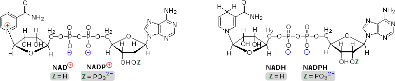
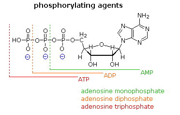
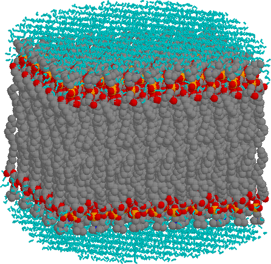
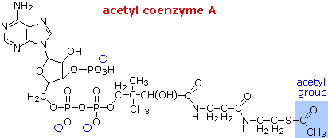
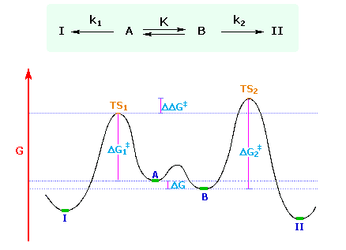
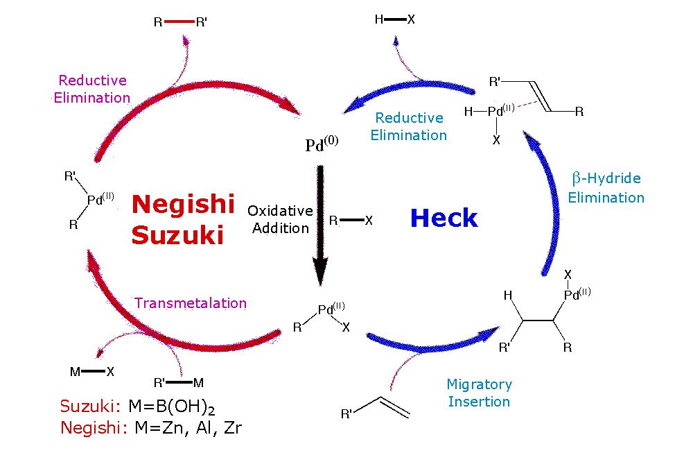

The light blue (cyan) network above and below the bilayer consists of water molecules (not drawn to size). Red atoms are oxygen, dark gray are carbon and orange are phosphorous. Nitrogen atoms are dark blue, but none are evident. The hydrogen atoms on the alkyl chains are not shown.




When conformers, or other rapidly interconverting isomers, undergo a chemical reaction that produces one product from one isomer and a different product from the other isomer, and the products themselves are not formed reversibly and are not in equilibrium under the reaction conditions, the ratio of products is controlled by the difference (ΔΔG‡) in the standard free energies of the respective transition states.
This necessarily intricate statement is best understood by reference to a specific case, such as the one shown below. Here, A and B represent rapidly equilibrating conformers, with B predominating (K > 1). A reaction converts A to I and B to II, the former rate (k1) being greater than the latter (k2) because ΔG1‡ is less than ΔG2‡. As A is consumed it is replenished by rapid equilibrium with B. Consequently, the ratio of products I and II is determined by ΔΔG‡ and not by the the concentrations of A and B. In an equally valid treatment, using measurable quantities, the product ratio II / I is given by K • (k2 / k1). Product I is favored over II, even if II is thermodynamically more stable (as shown).
|
 |
|---|
A full review of the Curtin-Hammett and related Winstein-Holness kinetic relationships has been provided by J. I. Seeman, Chemical Reviews 83, 83, (1983).

